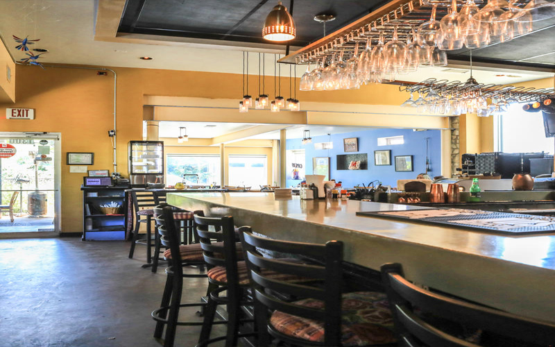

Austin, Texas is a vibrant city known for its diverse culinary scene. Whether you're a local or a visitor, exploring the unique flavors of Austin is a must.
In this blog post, we'll take a closer look at four amazing restaurants in Austin and their signature dishes that are sure to tantalize your taste buds.
Wilder Wood Restaurant – Veggie Taco: Located in the heart of Austin, Wilder Wood Restaurant offers a delightful twist on the classic taco. Their Veggie Taco is a culinary masterpiece, featuring a medley of fresh vegetables sourced from local farms. The combination of flavors and textures will leave you craving more. From the crispness of the vegetables to the homemade tortillas, every bite is a celebration of vegetarian goodness.
Mozart’s Coffee Roaster – Vietnamese Iced Coffee: For coffee enthusiasts, Mozart’s Coffee Roaster is a must-visit destination. Indulge in their heavenly Vietnamese Iced Coffee, a perfect balance of rich espresso and sweetened condensed milk. Served over ice, this refreshing beverage provides a delightful pick-me-up during Austin's warm days. Sit back, relax, and enjoy the scenic view of Lake Austin while sipping on this delectable drink.
Zucchini Kill Bakery – Vintage Heart Cake: Calling all dessert lovers! Zucchini Kill Bakery is a haven for those with a sweet tooth. Their Vintage Heart Cake is a work of art, both visually stunning and delicious. This decadent creation features layers of moist cake with a rich and creamy frosting. Each slice is a little piece of heaven that will make you fall in love with every bite. Treat yourself to this indulgence and experience pure bliss.
Flower Child – Mother Earth: For health-conscious individuals, Flower Child offers a menu that embraces nourishing and flavorful dishes. Their Mother Earth bowl is a delightful combination of nutrient-packed ingredients like ancient grains, roasted vegetables, and a variety of greens. With vibrant colors and a harmonious blend of flavors, this bowl is a true celebration of wholesome eating.
Austin, Texas is a culinary paradise with a diverse range of restaurants and dishes to explore. Whether you're a vegetarian, coffee lover, dessert enthusiast, or health-conscious eater, the city offers something to satisfy every craving. So, why not embark on a gastronomic adventure and indulge in the unique flavors that Austin has to offer? Your taste buds will thank you.
Wilder Wood Restaurant – Veggie Taco: Located in the heart of Austin, Wilder Wood Restaurant offers a delightful twist on the classic taco. Their Veggie Taco is a culinary masterpiece, featuring a medley of fresh vegetables sourced from local farms. The combination of flavors and textures will leave you craving more. From the crispness of the vegetables to the homemade tortillas, every bite is a celebration of vegetarian goodness.
Mozart’s Coffee Roaster – Vietnamese Iced Coffee: For coffee enthusiasts, Mozart’s Coffee Roaster is a must-visit destination. Indulge in their heavenly Vietnamese Iced Coffee, a perfect balance of rich espresso and sweetened condensed milk. Served over ice, this refreshing beverage provides a delightful pick-me-up during Austin's warm days. Sit back, relax, and enjoy the scenic view of Lake Austin while sipping on this delectable drink.
Zucchini Kill Bakery – Vintage Heart Cake: Calling all dessert lovers! Zucchini Kill Bakery is a haven for those with a sweet tooth. Their Vintage Heart Cake is a work of art, both visually stunning and delicious. This decadent creation features layers of moist cake with a rich and creamy frosting. Each slice is a little piece of heaven that will make you fall in love with every bite. Treat yourself to this indulgence and experience pure bliss.
Flower Child – Mother Earth: For health-conscious individuals, Flower Child offers a menu that embraces nourishing and flavorful dishes. Their Mother Earth bowl is a delightful combination of nutrient-packed ingredients like ancient grains, roasted vegetables, and a variety of greens. With vibrant colors and a harmonious blend of flavors, this bowl is a true celebration of wholesome eating.
Austin, Texas is a culinary paradise with a diverse range of restaurants and dishes to explore. Whether you're a vegetarian, coffee lover, dessert enthusiast, or health-conscious eater, the city offers something to satisfy every craving. So, why not embark on a gastronomic adventure and indulge in the unique flavors that Austin has to offer? Your taste buds will thank you.